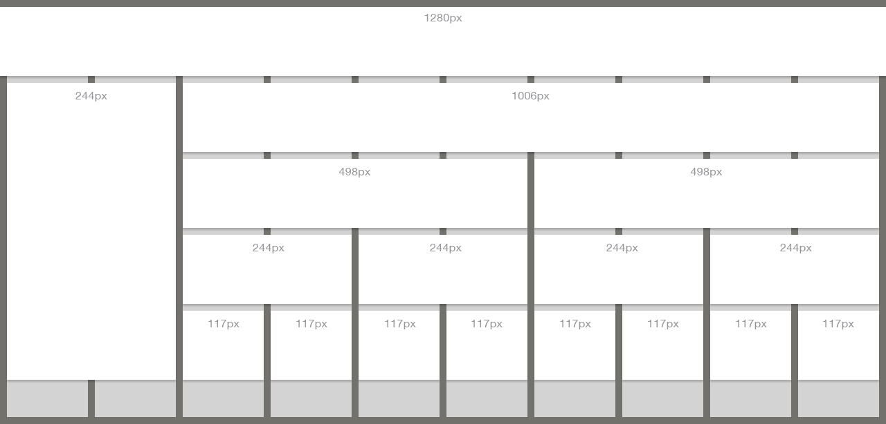

It’s important when laying out new pages that we follow a consistent pattern for where items appear, how they look, and how a user interacts with them. One of the easiest ways for us to follow a consistent layout pattern is with a good foundation to build on. In our case, we’ll start with building pages off of a 10-column grid size as shown in the below image taken from Youtrack UX-18.
We leverage this grid system as it makes the most out of the available space for our common screen size of 1280 x 1024. The blue areas represent 10 pixels of clear space for any key content like buttons and text. Some UI elements should be easy to visualize like the header area that would stretch the full 10 columns. There’s also the sidebar that takes up 2 columns of space on the left along with the content area that spans 8 columns. Each new page will need to be reviewed on a case-by-case basis but in general, these guidelines should help you through most of the process.

*The dark gray area represents a 10px clear space for primary content items like text and buttons.
Fonts
The font we use is a standard sans-serif system font of Helvetica with a few fallbacks. It’s use in CSS should appear as listed below with the additions of font renderings to make them more legible on certain browsers.
Font sizes should remain consistent as well. The default font size should be 13px. For the sidebar tabs and section headers, the font size is 16px. Any disclaimer and low priority fonts should be sized at 11px. These sizes allow us to remain within a widely accepted legibility range.
Got the urge to BOLD SOME TEXT AND MAKE IT ALL CAPS? Don't! By default, fonts should be weighted normal with standard capitalization.
Tabs and Headers
Keeping content and key areas of the site separated from one another along with letting each take up it’s required amount of space on screen is an important part to laying a page out. As with everything else, it’s also important that we maintain a consistent look when displaying these items on screen. The standard height for page headers and sidebar tabs is 40px tall. This allows for a good amount of space to create clear division on the page without becoming too distracting from the main content. It also fits in with UI standards for any users who may happen to visit the website from a tablet device. Below are two samples of how these items would appear on screen:
There are a variety of button types throughout ChathamDirect. Some rely on the sprite and others simply require words and CSS. Outlined here are a few samples of common button issues you may run into.